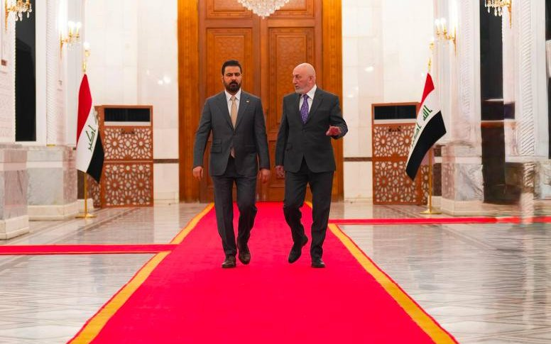

Iraq is not one market. It is fifteen federal governorates plus the Kurdistan Region — and the distinction is not academic. Federal Iraq licenses investment through the National Investment Commission under Investment Law No. 13. The Kurdistan Region operates its own investment law, its own licensing board, and its own ownership and tax rules. That single line decides where you register and under which legal regime you operate. Beyond it, a strategy built for Basra will fail in Karbala, and an approach designed around Kirkuk's oil fields has almost nothing in common with Muthanna's cement industry. For international companies, the first question was never whether to engage with Iraq. It is where.
The energy heartland
Iraq holds an estimated 145 billion barrels of proven oil reserves, and these five governorates carry most of that weight. Basra is the southern energy, ports and logistics gateway — the export artery and the centre of refining and petrochemical ambition. Dhi Qar sits on a heritage, infrastructure and southern growth corridor, while Maysan combines oil production with agriculture and border trade toward Iran. Salah al-Din anchors refining and energy in the centre of the country.
Kirkuk is the province to watch. BP's development and production contract covers the Baba and Avanah domes together with the Bai Hassan, Jambur and Khabbaz fields, with an initial phase targeting more than 3 billion barrels of oil equivalent. The wider resource opportunity across the contract area and its surroundings is estimated at up to 20 billion boe. In July 2026, ConocoPhillips agreed to acquire a 42% interest in BP Energy Company of Kirkuk Limited — its return to Iraq after more than a decade — with the transaction expected to close by year-end, subject to regulatory approval.
Current Kirkuk output runs between 285,000 and 330,000 barrels per day, with redevelopment expected to add 50,000–100,000 bpd. For suppliers, that means sustained demand across drilling services, facility rehabilitation, midstream infrastructure, water handling and power generation.
يمتلك العراق احتياطيات نفطية مؤكدة تُقدَّر بنحو 145 مليار برميل، وتحمل هذه المحافظات الخمس معظم هذا الثقل. البصرة هي بوابة الطاقة والموانئ واللوجستيات في الجنوب — شريان التصدير ومركز طموحات التكرير والبتروكيماويات. وتقع ذي قار على ممر نمو جنوبي يجمع التراث والبنية التحتية، بينما تجمع ميسان بين إنتاج النفط والزراعة والتجارة الحدودية مع إيران. وترسّخ صلاح الدين التكرير والطاقة في وسط البلاد.
كركوك هي المحافظة الجديرة بالمتابعة. يغطي عقد التطوير والإنتاج مع بي بي قبتَي بابا وآفانا إلى جانب حقول باي حسن وجمبور وخبّاز، بمرحلة أولى تستهدف أكثر من 3 مليارات برميل مكافئ نفطي. وتُقدَّر فرصة الموارد الأوسع في منطقة العقد ومحيطها بما يصل إلى 20 مليار برميل مكافئ. وفي تموز 2026، وافقت كونوكوفيليبس على الاستحواذ على حصة 42% في شركة بي بي للطاقة في كركوك — عودةً إلى العراق بعد أكثر من عقد — على أن تُغلق الصفقة بنهاية العام رهناً بالموافقات التنظيمية.
يتراوح إنتاج كركوك الحالي بين 285 و330 ألف برميل يومياً، ومن المتوقع أن تضيف إعادة التطوير 50–100 ألف برميل يومياً. وهذا يعني للمورّدين طلباً مستداماً في خدمات الحفر وإعادة تأهيل المنشآت والبنية التحتية الوسطية ومعالجة المياه وتوليد الطاقة.
The pilgrimage economy
These two governorates host one of the world's largest sources of recurring, non-oil demand. Najaf combines its role as a leading centre of religious tourism with genuine housing demand and industrial development. Karbala is a religious tourism, hospitality and urban expansion market.
Millions of visitors each year generate structural need for hotels, catering, transport, retail and urban infrastructure. Both cities have transport and hospitality programmes in development, including airport capacity and urban transit planning. For hospitality operators, developers and transport contractors, this is the most predictable demand curve in the country — and the one least exposed to oil price cycles.
تستضيف هاتان المحافظتان واحداً من أكبر مصادر الطلب المتكرر غير النفطي في العالم. تجمع النجف بين دورها كمركز رائد للسياحة الدينية وطلب حقيقي على الإسكان وتطوير صناعي. وكربلاء سوق للسياحة الدينية والضيافة والتوسّع الحضري.
يولّد ملايين الزوار سنوياً حاجة هيكلية للفنادق والتموين والنقل والتجزئة والبنية التحتية الحضرية. وتشهد المدينتان برامج نقل وضيافة قيد التطوير تشمل الطاقة الاستيعابية للمطارات وتخطيط النقل الحضري. وبالنسبة لمشغّلي الضيافة والمطوّرين ومقاولي النقل، هذا هو منحنى الطلب الأكثر قابلية للتنبؤ في البلاد — والأقل تعرّضاً لدورات أسعار النفط.
The stable gateway
Erbil is the Kurdistan Region's commercial and investment centre; Sulaymaniyah a diversified business, education and regional trade hub; Duhok the northern gateway toward Turkey. Halabja became the Region's fourth governorate in 2014 and was recognised by the federal parliament as Iraq's nineteenth in 2025; most economic datasets still report it within Sulaymaniyah — a separate brief is available below.
The Region operates under its own investment law, administered by the Kurdistan Board of Investment. Licensed projects can be 100% foreign-owned, with a 10-year exemption from non-customs taxes and duties, and a five-year customs exemption on raw materials imported for production. Land allocation and utility connection to the project boundary form part of the standard incentive package.
One caveat worth building into your structure from the outset: a Kurdistan licence is valid only within the three Kurdistan governorates. It does not extend to federal Iraq, where the licensing authority and foreign-ownership rules differ. The Region remains the most practical first step for many companies — but it should be entered with the wider Iraqi market already in view.
أربيل هي المركز التجاري والاستثماري لإقليم كردستان؛ والسليمانية مركز متنوّع للأعمال والتعليم والتجارة الإقليمية؛ ودهوك البوابة الشمالية نحو تركيا. وقد أصبحت حلبجة المحافظة الرابعة للإقليم عام 2014، وأقرّها مجلس النواب الاتحادي محافظةً عراقية تاسعة عشرة عام 2025؛ ولا تزال معظم قواعد البيانات الاقتصادية تدرجها ضمن السليمانية — ويتوفّر ملف منفصل لها أدناه.
يعمل الإقليم بموجب قانون استثمار خاص به يديره مجلس الاستثمار في كردستان. ويمكن أن تكون المشاريع المرخَّصة مملوكة بالكامل لأجانب بنسبة 100%، مع إعفاء لعشر سنوات من الضرائب والرسوم غير الجمركية، وإعفاء جمركي لخمس سنوات على المواد الأولية المستوردة للإنتاج. ويشكّل تخصيص الأراضي وإيصال الخدمات إلى حدود المشروع جزءاً من حزمة الحوافز القياسية.
وثمة تحفّظ يجدر بناء الهيكل عليه منذ البداية: رخصة كردستان صالحة فقط داخل محافظات الإقليم الثلاث، ولا تمتد إلى العراق الاتحادي حيث تختلف جهة الترخيص وقواعد الملكية الأجنبية. ويبقى الإقليم الخطوة الأولى الأكثر عملية لكثير من الشركات — لكن ينبغي دخوله والسوق العراقية الأوسع في الحسبان.
The reconstruction frontier
Mosul is a reconstruction, industry and northern logistics centre, with significant remaining need across housing, health, education, water and municipal infrastructure. Anbar — Iraq's largest governorate by area, centred on Ramadi and Fallujah — forms the western land corridor toward Jordan and Syria and holds vast phosphate reserves alongside its own reconstruction pipeline.
Substantial opportunity paired with real complexity. This is not a first entry point. It suits contractors with genuine post-conflict experience, robust security planning, and the patience to work through layered approval processes.
الموصل مركز لإعادة الإعمار والصناعة واللوجستيات الشمالية، مع حاجة كبيرة متبقية في الإسكان والصحة والتعليم والمياه والبنية التحتية البلدية. والأنبار — أكبر محافظات العراق مساحةً، ومركزها الرمادي والفلوجة — تشكّل الممر البري الغربي نحو الأردن وسوريا، وتمتلك احتياطيات فوسفات ضخمة إلى جانب برنامجها الخاص لإعادة الإعمار.
فرصة كبيرة مقترنة بتعقيد حقيقي. وهذه ليست نقطة دخول أولى. فهي تناسب المقاولين ذوي الخبرة الحقيقية في بيئات ما بعد النزاع، مع تخطيط أمني متين وصبر على مسارات الموافقات المتعددة.
The agricultural and industrial belt
The least-covered part of the Iraqi market, and often the least contested. Babylon is a central industrial, agricultural and heritage governorate. Diyala is agricultural, water-rich and oriented toward border trade. Wasit, centred on Kut on the Tigris, combines farming with significant water and sewerage needs, a growing housing programme, and the Zurbatiya crossing into Iran. Qadisiyyah is an agricultural and food-processing market.
Muthanna deserves particular attention: a large, lightly populated southern governorate centred on Samawah, holding Iraq's deepest cement-industry base, major new industrial and power investment, and substantial solar potential.
For agri-processing, water treatment, building materials, cold chain and renewable energy, these five provinces carry demand that rarely appears in headline coverage of Iraq.
الجزء الأقل تغطيةً في السوق العراقية، وغالباً الأقل ازدحاماً بالمنافسين. بابل محافظة صناعية وزراعية وتراثية في الوسط. وديالى زراعية غنية بالمياه وموجّهة نحو التجارة الحدودية. وواسط، ومركزها الكوت على دجلة، تجمع الزراعة مع احتياجات كبيرة في المياه والصرف الصحي وبرنامج إسكان متنامٍ ومعبر زرباطية نحو إيران. والقادسية سوق زراعية وتصنيع غذائي.
وتستحق المثنى اهتماماً خاصاً: محافظة جنوبية واسعة قليلة السكان ومركزها السماوة، تمتلك أعمق قاعدة لصناعة الإسمنت في العراق، واستثمارات صناعية وطاقية جديدة كبيرة، وإمكانات شمسية معتبرة.
وبالنسبة للتصنيع الزراعي ومعالجة المياه ومواد البناء وسلاسل التبريد والطاقة المتجددة، تحمل هذه المحافظات الخمس طلباً نادراً ما يظهر في التغطية الإخبارية للعراق.
The administrative centre
Baghdad is the federal capital and national commercial hub — where ministries sit, where tenders are awarded, and where the relationships that unlock the rest of the country are built. Even projects delivered entirely in the south or north are usually shaped by decisions taken here.
It is also a substantial market in its own right: the largest population centre, with corresponding demand in housing, transport, power, healthcare and consumer services.
بغداد هي العاصمة الاتحادية والمركز التجاري الوطني — حيث تقع الوزارات، وتُرسى المناقصات، وتُبنى العلاقات التي تفتح أبواب بقية البلاد. وحتى المشاريع التي تُنفَّذ بالكامل في الجنوب أو الشمال تتشكّل عادةً بقرارات تُتَّخذ هنا.
وهي أيضاً سوق كبيرة بحد ذاتها: أكبر مركز سكاني، مع طلب مقابل في الإسكان والنقل والطاقة والرعاية الصحية والخدمات الاستهلاكية.
Detailed briefs — 15 federal governorates and the Kurdistan Region (19 in total)
Each brief covers the local economy, project pipeline, operating environment and institutional sources.
Choosing the right province is the first decision. Middle East Nexus helps companies make it with local knowledge, not guesswork.
The practical route in
Choose the right legal regime
Federal Iraq and the Kurdistan Region operate separate investment laws. Decide early where you register and under which regime — it shapes ownership, tax and licensing.
Register the company or branch
Establish a local company, register a branch, or partner with an Iraqi entity, with company registration and NIC/provincial commission steps completed in the right order.
License under Investment Law No. 13
An investment licence unlocks tax holidays of up to ten years, customs exemptions and profit-repatriation guarantees for qualifying projects.
Set up banking & payments
Open a local bank account and arrange correspondent banking in advance; cross-border payments need to be planned before, not during, a transaction.
Build the right local relationships
Identify who actually holds the authority to move a project forward, and work with vetted local partners and advisors on the ground.
For the full process, see our guide to registering a company in Iraq.
A realistic national picture
Iraq rewards companies that plan around its realities rather than around headlines. Conditions vary sharply by governorate, so this national read is a starting point, not a substitute for province- and project-level due diligence.
| Factor | National read |
|---|---|
| Security | Broadly functional for business and much improved, but highly variable by governorate — plan movement and use vetted local partners. |
| Politics & budgets | Government formation and budget cycles can be slow; confirm which body and official is empowered to commit before investing effort. |
| Payments & banking | Cross-border transfers need correspondent arrangements set in advance; digital payments are expanding quickly. |
| Legal & licensing | Investment Law No. 13 is investor-friendly on paper; the value is in navigating the process and the two distinct regimes correctly. |
| Market opportunity | Deep, reconstruction-driven demand across energy, infrastructure, housing and services — one of the region's largest untapped pipelines. |
Assessment prepared by Middle East Nexus from public sources and on-the-ground experience. Directional — re-test against current conditions for any specific project.
Iraq is one of the last major economies being rebuilt almost from the ground up — and that is precisely where the opportunity lies. After more than two decades working across the country, my experience is that success here is rarely about capital alone. It comes from understanding how each province actually works, who holds the authority to move a project forward, and how to navigate the ground before committing to it. That is the difference between a signed contract and a stalled one.
Founder, Middle East Nexus